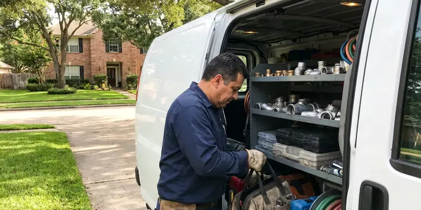

Slab Leak Detection in Woonsocket, RI
Got a post-tension slab? We scan for cables before any cutting in Woonsocket, RI, so the steel tendons stay intact.
- Slab Testing Within a Day
- Reroute or Spot Repair
- Photo Report for Insurance
- Pinpointed to Inches

Book Slab Leak Detection in Woonsocket, RI
A precise mark keeps the hole small and less damage to your flooring.
Local Slab Leak Specialists in Woonsocket, RI
JPN Plumbing sees the same causes behind most slab leaks. Water chemistry can thin copper from the inside, shifting soil moves the pipe, and lines that expand with hot water wear thin where they rub on gravel or rebar. Hot lines fail most.
Some of what we do:
- Pinpointing leaks to a few inches
- Tracer gas for quiet PEX leaks
- Post-tension cable scanning

Additional Plumbing Maintenance Services in Woonsocket, RI
Our maintenance and specialty plumbing services in Woonsocket, RI catch small problems before they become emergencies.


Customers
Why Choose JPN Plumbing for Slab Leak Detection in Woonsocket, RI?
Thousands of gallons, cracked tile, warped wood floors and soft soil under the foundation are what one slab leak can cost. Finding it accurately comes first. After that, the repair can be one small opening or a reroute through the attic, not a torn-up house.
- Honest Options, We price spot repair, reroute and repipe together so you can compare.
- Foundation Focus, Finding the leak early protects the soil under the slab, a real concern for Rhode Island homeowners.
- Home Value, An unrepaired slab leak shows up on inspections, so fixing it protects your sale price.
Citywide Coverage
From older neighborhoods to new subdivisions, our techs cover every part of Woonsocket, RI, and the same truck that handles a ranch house handles a two-story on a post-tension slab. Water differs from area to area. That affects how copper wears under a slab, and we factor it into where we look first.
Experienced Team
Each tech trains on current detection gear and repair methods every year, including tendon scanners and acoustic correlators. Equipment keeps improving. That training lets them diagnose slab leaks in Woonsocket, RI homes faster and recommend the repair that fits the pipe.
Safety-First Approach
Nothing we use during locating harms the house, and the tracer gas we use is a harmless hydrogen and nitrogen mix that vents off on its own. We protect floors while working. Repairs meet the building and plumbing codes your city enforces.
Trusted Certified Woonsocket Plumbing Services Professionals
At JPN Plumbing, we are proud to offer certified plumbing services throughout Woonsocket, RI. Credentials matter in this trade. Every repair, install and maintenance visit follows strict safety and quality rules, and the plumbers doing the work carry recognized industry credentials.
Call Us Now PHCC Plumbing Contractor Recognition
PHCC Plumbing Contractor Recognition Better Business Bureau (BBB) Accreditation
Better Business Bureau (BBB) Accreditation Angi Certified Pro
Angi Certified Pro ISO 9001 Quality Management Certification
ISO 9001 Quality Management CertificationHow We Find Slab Leaks in Woonsocket, RI
Slab Leak Reroutes in Woonsocket
Rerouting leaves the failed pipe in the slab. New pipe runs through the walls or attic instead, so there is no concrete work and the cost is often lower than going through tile. We usually use PEX because it handles heat and resists corrosion. It suits tile and hardwood homes.

Slab Leaks in Older Homes in Woonsocket, RI
Older homes in Woonsocket, RI often have soft copper or galvanized steel under the slab, and both wear out with time. Copper fails at bends and where it rubs concrete, while galvanized rusts from the inside until it splits. We know those failure points. That knowledge points the search at the likeliest spots first.
Commercial Slab Leak Detection in Woonsocket, RI
Offices, shops and restaurants on slabs in Woonsocket, RI can lose a lot of water fast because their supply lines are larger. We test after hours if needed. JPN Plumbing isolates zones, traces mains and branch lines under the floor, and marks the leak so repair crews can work around your business schedule.
Repiping After Repeat Slab Leaks in Woonsocket, RI
A second slab leak is often a sign of more. The rest of the pipe has likely aged the same way, so repiping replaces every supply line with new PEX or copper through the walls and attic, which ends the pattern of new leaks and new floor openings. A full repipe takes about two to four days.
Hot Water Slab Leak Detection in Woonsocket
Hot lines leak under slabs more often than cold ones. Heat speeds up corrosion, and the pipe expands and contracts every time someone showers, rubbing against concrete and gravel until it wears through. Warm floors and a water heater that runs nonstop are the signs. Gas or electric bills may jump too.
Direct Access Slab Leak Repair in Woonsocket, RI
A single leak on sound pipe can be fixed in place. We cut a small opening at the marked spot, dig down to the pipe, replace the bad section and hold a pressure test. Then we backfill and patch the concrete level, ready for flooring. A precise mark keeps the opening tight.
Emergency Slab Leak Response in Woonsocket
Water flooding a hallway or seeping through grout needs a plumber now. Shut the main. We respond quickly, isolate the leak and usually get water back to the rest of the home that day, then come back to locate and repair the line properly.

Cold Water Slab Leak Detection in Woonsocket, RI
Cold-side leaks leave no warm spot. That makes them harder to spot. They usually show up as a running meter, damp carpet, a musty smell or water seeping at baseboards, which is why we isolate the cold line, trace its route and listen along it with acoustic gear.
Slab Leak Help Near You in Woonsocket, RI
A fast answer on a suspected slab leak keeps the floor and soil damage small, since a pinhole leaking a quart an hour puts more than 150 gallons a month under the foundation. We can usually test within a day in Woonsocket. Recent bills help.
Slab construction and pipe materials repeat across subdivisions built in the same era around Woonsocket, so a house built in the same decade as its neighbors usually hides its leak in a similar place. It shortens the hunt. A follow-up visit for the repair is easy to set up too.
JPN Plumbing at a Glance
- Fully licensed plumbing team covering Woonsocket, RI
- 24/7 emergency service with same-day scheduling
- Upfront, flat-rate pricing before work begins
- 4.8-star rated by 684+ Rhode Island customers
Woonsocket Map
Woonsocket Information
- Population
- 43,135
- Area codes
- Local
- Service area
- Woonsocket and communities within 40 miles
- Nearby
- Cumberland Hill, Valley Falls, Greenville, Central Falls
Ground movement strains pipe buried under concrete, and a leak there can undermine the foundation if it runs for months. Fast locating limits the damage in Woonsocket, RI.
Expert Services
Reach out to JPN Plumbing for honest, reliable plumbing from people who know the trade in Woonsocket, RI.
Our Specialized Plumbing Services in Woonsocket, RI
At JPN Plumbing, we handle the full list of plumbing services across Woonsocket, RI. From leak detection to full system installs, our team works fast and charges fair prices on homes and commercial properties alike. Here are the core services we offer:


How a Slab Leak Visit Runs in Woonsocket, RI
Here is how a slab leak visit runs in Woonsocket, RI, from the meter check to the marked spot on the floor.
Call and Describe
Call (401) 364-2507 and describe the signs you are seeing, like a warm floor or a running meter. We book a visit.
Isolate and Locate
Our tech isolates the hot and cold sides, then traces and listens through the slab at your Woonsocket home.
Mark and Price
You see the marked spot and get prices on each repair, from spot repair to reroute.
Frequently Asked Questions About Slab Leak Detection in Woonsocket
Slab leak detection in Woonsocket usually costs $150 to $450. Repairs range from about $800 for a simple reroute to $3,000 or more for direct access under finished floors with tile or hardwood on top. You get a written estimate after locating.
You get a marked spot, a written report and repair options. Usually there are three. The choices are a direct repair, an overhead reroute or a full repipe, each priced in writing.
Direct repair works for one leak on healthy pipe in a reachable spot, usually where the floor covering is cheap to patch, like carpet or vinyl. A reroute often wins under finished floors and prevents repeat leaks on that line. We price both for you.
We do. Repairs and reroutes carry a written workmanship warranty. We explain the coverage, including what the PEX manufacturer adds on top of ours, before you approve any of the work in your home.
Many policies cover access to the leak and the water damage, though not always the pipe itself that failed under the slab. Coverage varies by insurer. We provide a written report with photos for the claim.
For most of them, yes. Repipes and slab cuts typically require a permit. JPN Plumbing pulls the permit and schedules the inspection in Woonsocket, so the work is on record with the building department and passes code before the floor gets closed.
Sometimes. Sudden leaks are more likely to be covered. Damage from a leak that ran for a long time may be excluded, so check your policy or call your agent before the repair.
High water bills, warm floor spots and the sound of running water with fixtures off are the big three. So do new cracks. Wet flooring, low pressure and musty smells along baseboards can also mean a slab leak.
What People Are Saying About Our Plumbing Experts?

Brian W.
I smelled gas behind the dryer and called right away. The plumber found a corroded flex connector, replaced it, and pressure tested the whole line before turning the gas back on. He let me watch the gauge hold steady for fifteen minutes.
Gas Line Repair · Woonsocket, RI
Emily R.
The shutoff valve under our kitchen sink snapped off in my hand on a Sunday morning. JPN Plumbing had someone out by early afternoon. He replaced both angle stops with quarter turn valves and showed me where our main shutoff was, which I honestly did not know.
Plumbing Repair · Pawtucket, RI
Jessica T.
We were adding a gas range in a kitchen remodel and needed a new line run from the meter. The plumber pulled the permit, ran the pipe through the crawl space, and had it inspected and approved within the week.
Gas Line Repair · Providence, RI
Tyler J.
We bought a taller comfort height toilet for my dad, who just had knee surgery. The plumber pulled the old one, found the flange was cracked, and replaced it before setting the new bowl. Took about two hours.
Toilet Installation · Providence, RI
Patricia H.
We had a slab leak that two other companies could not find. JPN Plumbing located it in under an hour with a listening device. They rerouted the line through the attic instead of breaking up the floor, so we kept our kitchen tile.
Slab Leak Repair · Providence, RILaura S.
Our 40 gallon tank started leaking from the bottom after thirteen years. The tech hauled the old one out, set a new unit with a fresh expansion tank, and had hot water running in about four hours. He took the old tank with him too.
Water Heater Replacement · Providence, RI